→ pour avancer · ← pour reculer · F pour le plein écran · N pour les notes
Qui a utilisé une IA cette semaine ?
… pour autre chose que poser une question ?
À la fin, tu sauras lancer un projet qui exploite vraiment l'IA, sur ton sujet de discovery.
Vois l'IA comme ton nouveau collègue
Il vient de rejoindre ton équipe. Il est brillant. On lui parle comme à un humain.
Pas comme à un système
irritants gestion stocks entretiens
Comme à un humain
Je prépare une discovery sur la gestion des stocks. Voici un document qui explique le contexte, et des verbatims d'entretiens. Regroupe-les par irritant, cite le verbatim qui appuie chaque groupe, et dis-moi ce qui manque pour conclure. Si un point n'est pas clair, demande-moi.
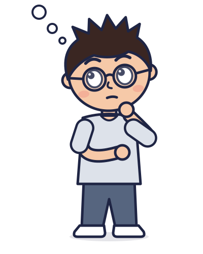
Brillant, mais il arrive les mains vides.
Il faut l'équiper, l'onboarder, et connaître ses traits de personnalité pour en tirer le meilleur.
Une présentation à tiroirs
Chaque tiroir te laisse quelque chose. Tu peux t'arrêter après chacun.
1L'équiperTu as les bons outils, et tu sais ce que chacun permet.
2L'onboarderTu travailles avec lui, cycle après cycle.
3Ses traitsTu corriges ses travers une fois pour toutes.
À la base, il n'a qu'une tête
Il ne sait que réfléchir, même pas mémoriser. C'est le LLM : l'usage le plus basique, ChatGPT ou Gemini sur le web.
Tu peuxPoser des questions, reformuler un texte, trouver des idées.
Une petite évolution : le RAG
Il lit tes documents avant de répondre.
Exemple de RAGGemini Notebook
Tu peuxInterroger tes documents : synthétiser tes entretiens, retrouver une décision.
Problème
Ça reste une tête : il n'agit toujours pas.
Ajoute-lui un corps : tu obtiens un agent
Ce corps, c'est le harnais : il lit, écrit, lance des commandes, regarde le résultat, et recommence.
Exemples de harnaisClaude CodeCodexGitHub Copilot
Tu peux
Le faire agir dans tout ce à quoi tu as accès. Si tu l'autorises.
Tes outils
Tout le web, via ton navigateur
leboncoin
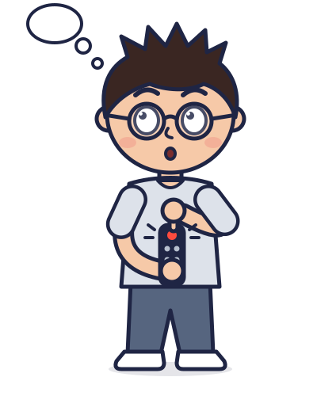
Problème
À chaque session, il faut tout lui redire. Et le reste de l'équipe ne peut pas lui parler.
Complète sa tête avec une mémoire
Il sait maintenant réfléchir et retenir : on enregistre des fichiers, qu'il saura relire.
Bien : sur ton ordinateur, pour travailler seul.
Mieux : sur GitHub, plus sûr et partagé avec l'équipe.
Tu peuxFaire du vibe coding : tu décris, il construit, session après session.
Problème
Il improvise : même demande, résultat différent.
Fais le compte rendu de la réunion.
Lundi
Décision : lancement repoussé au 12 mars.
Actions : Julie, les maquettes pour vendredi. Karim, le chiffrage pour mardi.
Jeudi
La réunion a permis des échanges riches autour du lancement. Plusieurs pistes ont été évoquées, et l'équipe reviendra sur le sujet prochainement.
Donne-lui un guide : les skills
Une recette écrite pour une tâche précise.
Exemples de skillsSynthétiser des entretiensRédiger une user storyÉcrire un compte rendu
Tu peux
Obtenir le même travail, bien fait, à chaque fois.
Comme dans ta cuisine : sans recette, il prend la première poêle venue et de l'huile. Avec la tienne, il fait tes crêpes, au beurre salé.
Problème
Des recettes partout : il ne sait plus où donner de la tête.
Une petite évolution : le framework de skills
Les recettes rangées en une méthode, avec des étapes et des rôles.
Exemples de frameworksBMADSpec KitGSD
Tu peuxDérouler toute une démarche, de l'idée à la livraison.
Problème
Il ne connaît rien de notre boîte.
Rends-le corporate avec la surcouche de ton entreprise
C'est le SDLC d'entreprise : il surcharge le framework avec ses conventions, son vocabulaire, ses skills.
Tu peuxLivrer un travail que l'équipe reconnaît comme le sien.
L'équiper, couche par couche
LLMPoser des questions
HarnaisAgir dans tes outils
MémoireVibe coder
GuideTravailler avec méthode
SDLC d'entrepriseLivrer comme l'équipe
Tu peux démarrer n'importe quel projet.
Il ne connaît pas encore le tien.
Onboarde-le en te mettant au travail avec lui.
Le cycle d'itération
Une session, un objectif, une PR. Puis on recommence.
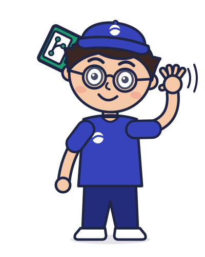
1Ouvre une session
2Parle-lui de ton sujet
3Revois son plan
4Il exécute le plan
5Commit et PR
6Relis et commente
7Merge
↺ Session neuve
Ouvre une session
Une conversation avec lui, dans ton harnais. Il arrive frais : il ne sait que ce qui est écrit dans le dépôt.
Un objectif par session : écrire le brief, synthétiser les entretiens, rédiger le PRD…
La toute première fois : un dépôt par projet, et la surcouche de l'entreprise s'y installe.
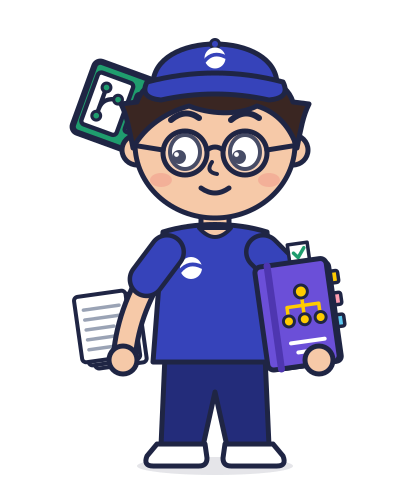
Parle-lui de ton sujet
Le plus précisément possible : il ne sait rien de ton métier tant que tu ne le lui donnes pas, ou ne lui dis pas où chercher.
Par exempleDocument de contexteVerbatims d'entretiensComptes rendusLiens Miro et Drive
Parle-lui en vocal : tu en dis plus, plus vite.
Tu peuxLui demander « Par quoi on commence ? » : il connaît déjà le sujet.
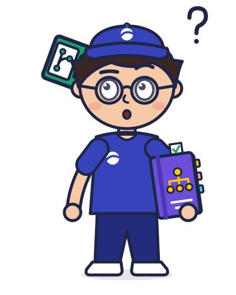
Dis-lui ce qui fait foi
Le cadrage de mars dit A, l'atelier d'octobre dit B : sans consigne, il cite les deux.
## Fait foi
- Atelier d'octobre (Miro) : périmètre retenu
## Obsolète
- Cadrage de mars : remplacé par l'atelier d'octobre
Sinon, un document périmé empoisonne ses réponses : c'est le context poisoning.
Tu peuxLui confier toutes tes sources, et lui dire : « Retourne voir, ça a changé. »
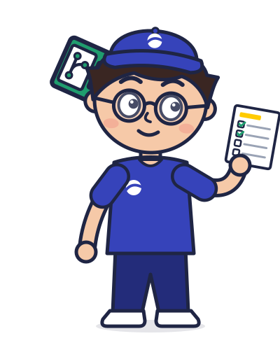
Demande-lui un plan, et revois-le
Avant d'écrire, propose-moi un plan.
1. Créer brief.md : problème, cible, hypothèses. 2. Citer les sources utilisées. 3. Lister les questions ouvertes.
Ajoute ce qui est hors périmètre, et ne touche pas aux synthèses.
C'est le moment le moins cher pour corriger : rien n'est encore écrit.
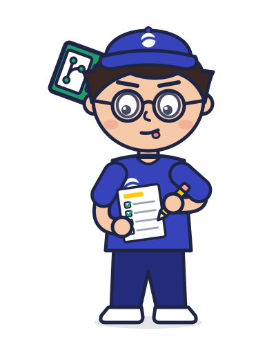
Il exécute le plan
Il écrit dans des fichiers du dépôt, avec les skills de ton framework.
Par exempleÉcrire un briefSynthétiser des entretiensRédiger un PRD
Appelle le skill par son nom : sinon, il improvise.
Il écrit dans des fichiers, pas dans la conversation : c'est ce qui restera.
Demande-lui de commiter et d'ouvrir une PR
Une phrase suffit : « Commite et ouvre une PR. »
Commit
Une sauvegarde datée de son travail, dans le dépôt.
→
Pull request
Une proposition de modification, sur GitHub.
→
Toi
Tu la relis avant de l'accepter.
Ce qui n'est pas commité est perdu : la session oublie, le dépôt se souvient.
Relis-la et commente-la sur GitHub
Comme le travail d'un collègue externe : tu ne supposes pas que c'est juste.
Ajoute le brief de la discoveryOuverte
brief.md
+ ## Cible
+ Les magasiniers des magasins intégrés et franchisés.
ToiLes franchisés sont hors périmètre.
LuiPris en compte dans le commit suivant.
Tu commentes, ligne par ligne, sur GitHub.
Dans ta session : « Prends en compte les commentaires de la PR. »
Il corrige : un nouveau commit.
↺ Nouvelle relecture, jusqu'à satisfaction.
Satisfait ? Merge
Tu acceptes la PR : la modification entre dans le dépôt.
Le brief est là pour toute l'équipe, et pour sa prochaine session.
Tu peuxReprendre trois semaines plus tard : « Où en est-on ? »
Puis, une session neuve
Pourquoi ne pas continuer ? Son bureau a une taille fixe : la fenêtre de contexte.
repère : ~25 %
Session neuve : le dépôt et les fichiers utilesPlein : il résume à sa façon
Il s'emmêle
Le bureau déborde : il résume à sa façon, c'est la compaction. Des détails se perdent, il comble en inventant.
Ça coûte
Il relit tout le bureau à chaque réponse : chaque mot relu se paie, en tokens.
Tu peuxRepartir frais : la session neuve relit ce qui est mergé, et rien de plus.
Cycle après cycle
Brief, synthèses, PRD : ta discovery grandit, une PR à la fois.
1Ouvre une session
2Parle-lui de ton sujet
3Revois son plan
4Il exécute le plan
5Commit et PR
6Relis et commente
7Merge
↺ Session neuve
Cycle après cycle, ses travers reviennent.
Corrige-les une fois pour toutes.
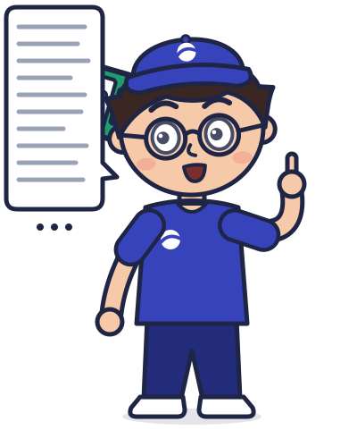
Travers
Il est bavard
Combien d'entretiens parlent de ressaisie ?
Excellente question ! La ressaisie des stocks est un sujet central de ta discovery. Après une analyse attentive des douze entretiens, voici une synthèse détaillée, en trois parties…
Tu lui dis « plus court ». Il obéit… et recommence à la session suivante.
Corrige la cause, pas le symptôme
Écris la règle dans AGENTS.md : un fichier qu'il relit au début de chaque session.
Tu corriges le symptôme
« Plus court. »
Il obéit.
Session suivante : trois paragraphes.
Tu corriges la cause
« Plus court, et retiens-le. »
La règle est écrite dans AGENTS.md.
Relue à chaque session : l'erreur ne revient plus.
Tu peuxRelire de moins en moins : chaque erreur ne se corrige qu'une fois.
Ton AGENTS.md, et celui du projet
Deux fichiers de règles, relus au début de chaque session.
Son entraînement le modèle
La surcouche de l'entreprise partie 1
Ton AGENTS.md toi, partout
AGENTS.md du projet l'équipe
Ta demande ce que tu tapes
Ton AGENTS.md
Toi, dans tous tes projets : le ton, le format, « contredis-moi ».
AGENTS.md du projet
L'équipe, dans le dépôt : l'organisation, le vocabulaire, les sources.
Une nouvelle règle ? « Retiens-le, au bon endroit. » Il choisit le fichier.
Travers
Il en fait trop
Résume l'atelier d'hier en une page.
Voici le résumé (6 pages), avec un plan de conduite du changement, une matrice RACI et trois scénarios de déploiement.
Parade« Fais ce qui est demandé, rien de plus. Propose le reste, sans l'ajouter. »→ ton AGENTS.md
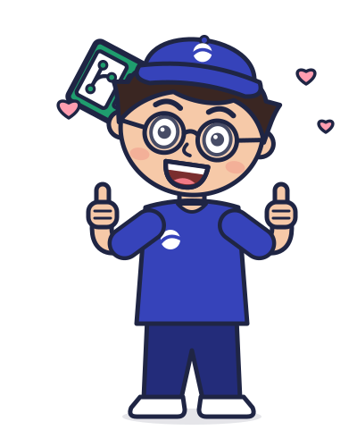
Travers
Il veut te faire plaisir
Mon hypothèse tient, non ?
Absolument ! Les entretiens la confirment.
Cinq entretiens sur douze la contredisent. Et en relecture, il trouve toujours un défaut, même quand il n'y en a pas.
Parade« Contredis-moi quand j'ai tort. "Rien à signaler" est une réponse acceptable. »→ ton AGENTS.md
discovery/
├─ sources.md ce qui fait foi
├─ interviews/ fait, interprétation,
│ recommandation
├─ decisions.md et leur pourquoi
└─ open-questions.md
→ AGENTS.md du projet
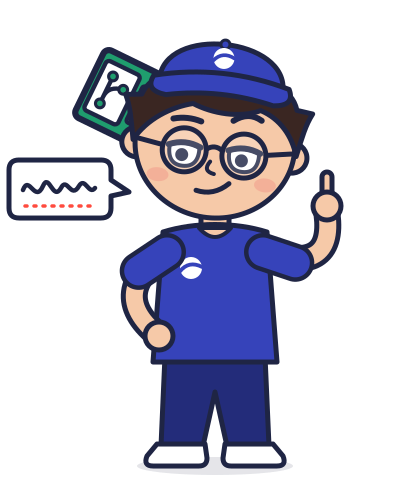
Travers
Il invente ses mots
Ton équipe ditmagasinierLui écritopérateur logistiqueagent d'entrepôtpréparateur
Trois mots pour une seule personne : le lecteur croit à trois métiers.
ParadeUn glossaire, un mot par notion : « Magasinier. Jamais opérateur, agent ni préparateur. »→ glossaire.md, lié depuis AGENTS.md
Tout n'a pas à être dans AGENTS.md
Il le relit à chaque session : garde-le court, et fais des liens.
# Discovery : gestion des stocks
Objectif : outiller la réception ?
- Rangement : voir docs/rangement.md
- Vocabulaire : voir docs/glossaire.md
- Ce qui fait foi : voir docs/sources.md
Court, il coûte moins
Chaque ligne d'AGENTS.md est relue, et payée, à chaque session.
Il suit les liens
Il ouvre le glossaire quand il écrit, les sources quand il cherche.
Tu peuxPasser le relais aux devs : un lien vers ta discovery dans le AGENTS.md de leur projet.
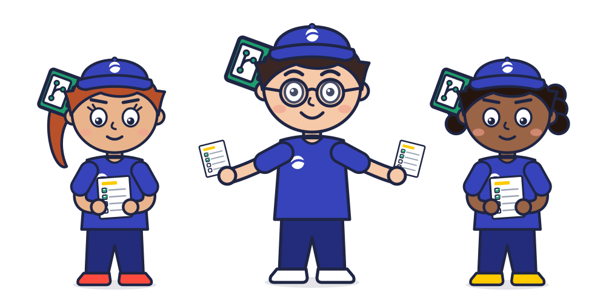
Fais-toi aider par d'autres collègues
Seul, il relit son travail avec les yeux de l'auteur, et son bureau déborde.
Chacun sa part
Douze entretiens ? Trois sous-agents en lisent quatre chacun, et ne lui rapportent que leur synthèse.
Tu peuxLe faire relire par un regard neuf : un collègue qui n'a pas assisté à la réunion.
Va plus vite, dépense moins
Une fois qu'il travaille à ta façon, optimise.
Le bon modèle
Un modèle léger pour extraire, un plus fort pour raisonner. Tu le choisis dans le menu.
Plusieurs sessions à la fois
Une par sujet, chacune sur sa copie du projet : elles ne se marchent pas dessus.
Ton workflow
Dis-lui comment tu aimes travailler : il s'adapte à tes habitudes, pas l'inverse.
Règle-le à ta façon
Comme les réglages d'un personnage de jeu : chaque curseur glisse vers ta façon.
BavardConcis
En fait tropJuste ce qu'il faut
Te donne raisonTe contredit
Son rangementLe tien
Ses motsTes mots
Tes trois tiroirs
Ce que tu as construit avec lui.
1L'équiperTu as les bons outils, et tu sais ce que chacun permet.
2L'onboarderTu travailles avec lui, cycle après cycle.
3Ses traitsTu corriges ses travers une fois pour toutes.
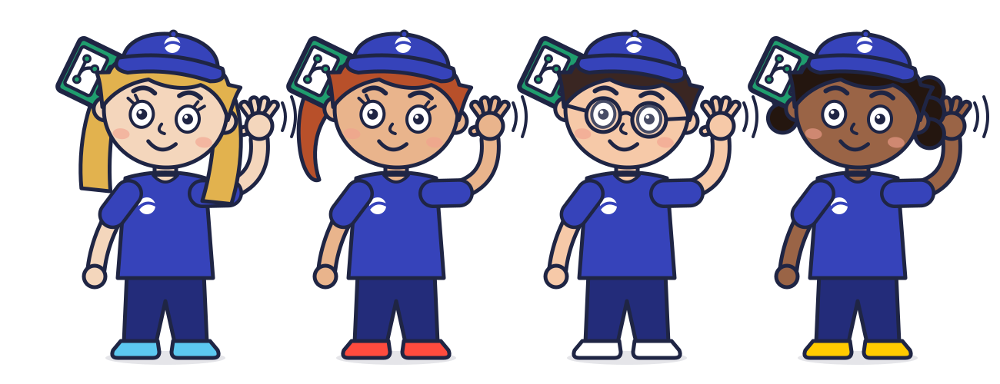
Ton collègue est prêt. Présente-lui ton projet.
Pas un moteur de recherche
Demande-lui comment faire, plutôt que de chercher à sa place.
Plus vite, ensemble
Seul, la courbe est longue : partage tes pratiques avec ton équipe.


 Problème
Problème


 Problème
Problème


 Problème
Problème

 Problème
Problème

 Ajoute le brief de la discoveryOuverte
Ajoute le brief de la discoveryOuverte